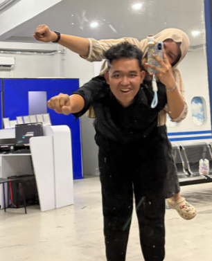
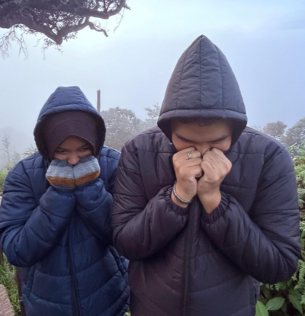

Jujurrr awalnya aku ragu bangett buatt terimaa kamuu karnaa perkenalan kita ituu singkatt sekalii,tapii aku mikirr kenapaa aku ga cobaa duluu yaa, Akhirnyaa aku coba terima kamuu setelahh aku gantung 2 hari heheheh, kamuu tu kerenn bangett tauu kamuu beranii buat dateng kerumahh akuu karnaa akuu gamauu pacaran sama orang yang tidakk di restuii bundaa

Aku dari awall udah tertarikk si sama kamuu karnaa yang aku liatt latar belakang pendidikann kamuu baguss, akuu dulu gasukaa cowo pintarr tapii setelah sama kamu sudut pandangg dan cara aku nngeliat duniaa itu bener bener berubahh
Akuu yakinn kaloo di malam itu aku nolak kamu buat jadi pacar aku, sampe detik ini pun aku gabakal ketemuu manusiaa sebaikk,seperhatian,selucu,dann segemass kamuu
Akuu gabakall lama pacaran sama kamuu yaa seperti yang sebelum nya aku harus mengalah dengan keadaan, tapii kamuu bedaa sayanggkuu aku berani melawan keadaan yang menghalangi kitaa dari bertumbuh bersamaa kamuu aku belajarr apaa ituu berjuang, usaha dan pengorbana, ternyata cinta tidak sesimple tertawa dan bahagia, tetapi juga banyak air mata dan pelukan hangat yang di butuhkan untuk meresakan keberadaan cinta itu